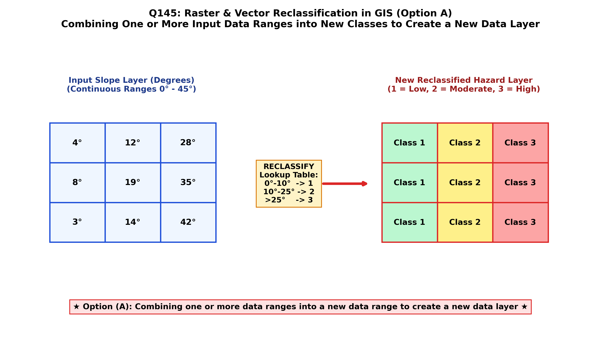

In Geographic Information Systems (GIS), reclassification (also termed re-coding or value slicing) is a fundamental cell-by-cell local operation in Map Algebra. It replaces existing input cell values in a raster dataset with new output values based on a user-defined lookup table, mathematical function, or range threshold (Chang; Burrough & McDonnell; Tomlin):
By international GIS definition, reclassification is the process of combining one or more data ranges (or discrete values) into a new data range (or new categorical value) to create a new derived data layer (Option A):
where $f(x, y)$ is the input raster value, $g(x, y)$ is the new reclassified value, and $T$ is the reclassification mapping function.
| Reclassification Mechanism | Operation Description | Practical Geospatial / Geological Example |
|---|---|---|
| 1. Range Slicing (Class Binning) (Option A) | Groups continuous numerical values into discrete ordinal or nominal categories based on specified range intervals. | Slope Reclassification: • $0^\circ\text{--}5^\circ \implies \text{Class 1 (Flat / Low Landslide Risk)}$ • $5^\circ\text{--}20^\circ \implies \text{Class 2 (Moderate)}$ • $>20^\circ \implies \text{Class 3 (High Landslide Hazard)}$. |
| 2. One-to-One Value Remapping | Replaces each unique categorical or numerical value directly with another specific code. | Lithological Coding: Remapping 50 detailed stratigraphical formation codes into 3 broad rock classes: Sedimentary (1), Igneous (2), Metamorphic (3). |
| 3. Boolean Thresholding (Binary Masking) | Evaluates a conditional expression to output a binary mask: $1$ if true, $0$ or NoData if false. | Aquifer Protection Mask: Cells where depth to water table $< 5\text{ m}$ become $1$ (Vulnerable); all others become $0$. |
| 4. Common Scale Normalization (Suitability Modeling) | Rescales disparate variables (slope, soil depth, distance to faults, rainfall) onto a common evaluation scale (e.g. 1 to 10). | Multi-Criteria Decision Analysis (MCDA) for mining lease site selection or landfill suitability mapping. |

Reclassification does not modify the original input dataset; it creates an entirely new data layer with generalized or transformed attribute values, acting as the mandatory preparatory step for weighted raster overlay and multi-criteria spatial decision support.
By authoritative GIScience and Map Algebra definitions (Chang, Ch. 12; Burrough & McDonnell; Tomlin; Bangar, p. 219), reclassification is precisely the operational process of grouping, re-assigning, or combining one or more existing data values/ranges into new values or ranges to generate an entirely new derived thematic data layer.
Reclassification is a generic local spatial operation primarily applied to raster grids and tabular polygon attributes. It is not an analytical technique specifically based on point data (which would refer to spatial interpolation or point pattern analysis).
While reclassification can simplify continuous data into categories, "simplifying data" is a vague description that also encompasses vector line generalization (e.g. Douglas-Peucker) and feature elimination. Option A provides the rigorous, formal definition of reclassification.
Combining two or more different data layers is the definition of Spatial Overlay (e.g. Intersect, Union, Weighted Overlay) or Mosaic/Merge, not reclassification. Reclassification operates on a single input layer at a time.
| Map Algebra Operation Category | Spatial Neighborhood Scope | Representative Tools | Input Layers Required |
|---|---|---|---|
| Local Operation (e.g. Reclassification) | Single cell location $(x, y)$ independently | Reclassify, Raster Calculator ($A + B$), Trigonometric math, Conditional (Con) | Single raster (or multiple rasters evaluated cell-by-cell) |
| Focal (Neighborhood) Operation | Target cell + surrounding roving window ($3 \times 3$, $5 \times 5$) | Focal Mean, Focal Variety, Slope, Aspect, Hillshade, High-pass filter | Single raster |
| Zonal Operation | Groups of cells sharing the same zone ID | Zonal Statistics (Zonal Mean elevation per geological formation) | Two rasters (Zone layer + Value layer) |
| Global Operation | Entire raster grid surface simultaneously | Euclidean Distance, Cost-Distance, Viewshed, Flow Accumulation | Single raster |
UPDATE table SET class = 1 WHERE slope < 5), followed optionally by a Dissolve operation.